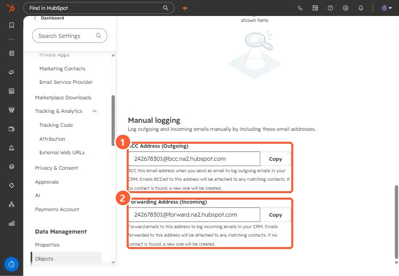

Short answer
At the bottom of Settings, Objects, Activities, Manual logging shows a BCC Address for outgoing email and a Forwarding Address for incoming email. Both attach the email to matching contacts, and create a contact if none is found. HubSpot says logged emails are associated with the contact, its primary company, and the five most recent open deals. BCC logging does not track opens or clicks.
1. The addresses
Open Activities settings and scroll to Manual logging. Each has a Copy button.


2. How each works
- BCC (outgoing): BCC it on an email you send. It is attached to matching contacts, and a new contact is created if none matches.
- Forwarding (incoming): forward a received email to it. HubSpot says the forwarding address is the same for all users in the account.
- Logged emails include content and attachments, and associate with the contact, its primary company, and up to five recent open deals.
3. Limits
- Using BCC in an email client without tracking only logs. It does not track opens or clicks.
- Because unknown recipients become contacts, avoid BCCing threads that include people you do not want in the CRM, or add them to the never log list.